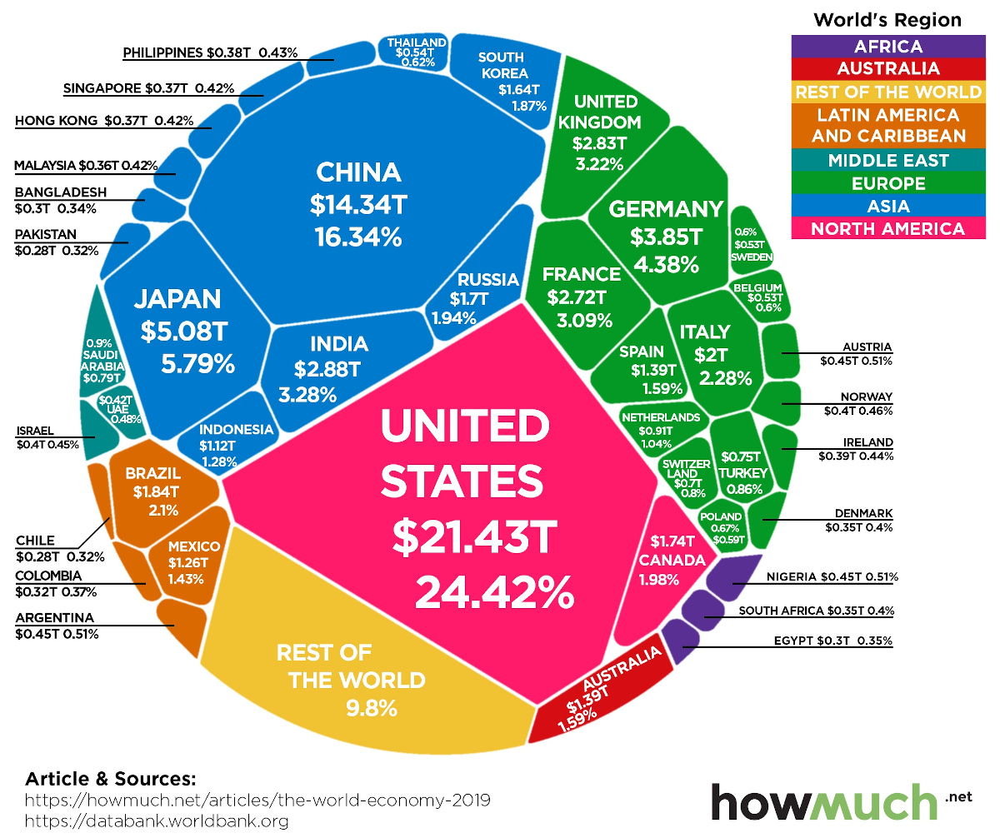

The Global Economy and Globalization
Countries cannot survive on their own. Everyone should help each other out, which is a reason global interdependence is a thing. Since the beginning of countries, people have helped their neighbouring countries with goods and currency. I'm sure you probably know about Joe Biden sending money to Ukraine to help them with their current battle with Russia trying to take over their country. The Silk Road which was used for Europe, North Africa, East Africa, Central Asia, South Asia, and the Far East is a great example of helping each other out.
The Traingular Trade network in which ships had manufactured goods on board from Europe to Africa also had enslaved Africans. This means globalization can be both good and bad. Slavery is never a good thing. The amount of globalization has increased a lot in the recent years thanks to communication and transportation advances. The rapid increase of information technology enables immediate communication between any country that has good enough technology for that to happen.
Benefits of a global economy include providing business with a competitive advantage by allowing them to get materials when they are expensive in their own country. It gives organizations the opportunity to lower labor costs in countries that aren't fully developed. I'm sure you know about many products in the United States being made in China. Globalization is why. It has been used by the automotive industry. For example, different parts of a car can be made in different countries. You might also notice that companies in the United States has outsourced many of their call centers to India and other countries. This is so jobs are more common in those countries as they aren't as wealthy as the United States.
Like I said before, globalization is not always a good thing. Changes will most likely have good and bad. People who need jobs that are outsourced to other countries suffer because of the outsourcing. People may need to look for lower paying jobs because of corporations that may give jobs to less expensive labor markets.
Regardless of all the bad things globalization may bring. It won't go away. Globalization has done more good than bad, and this is what unites the countries around the world.
Click the image below to open it in a new tab.
